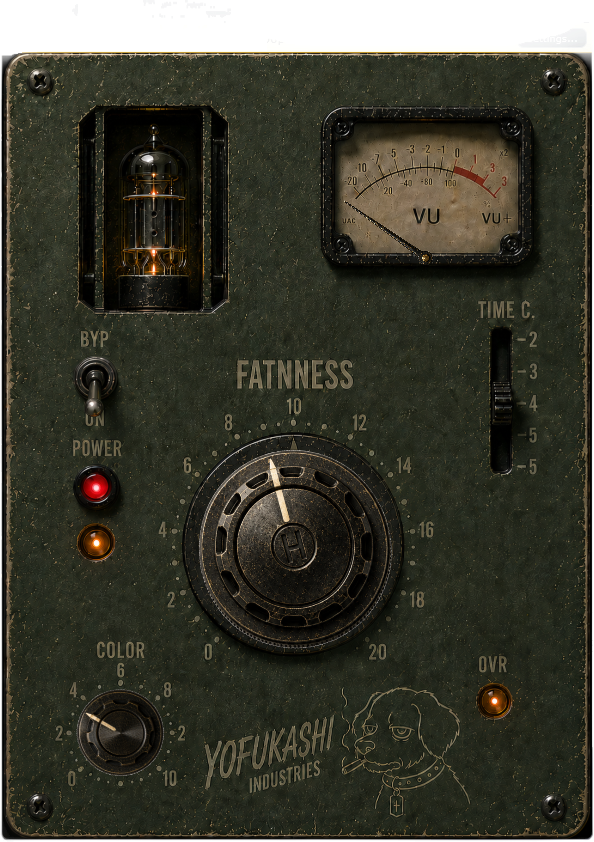

NOCT FAT
Two-knob saturation device built for density, heat and sleepless mixes.

Windows VST3 / Beta Version
FACTORY PRESETS
01 SMOKE
02 BACKSTAGE
03 MIDNIGHT
04 ASH
05 OVERHEAT
ABOUT
YOFUKASHI INDUSTRIES creates unstable audio tools for people who stay awake too long.